総会・懇親会
- 令和６年６月８日第６１回札幌突兀会総会・懇親会
- 令和５年６月１８日第６０回札幌突兀会総会・懇親会
- 令和元年６月２日第５９回札幌突兀会総会・懇親会
- 平成３０年６月３日第５８回札幌突兀会総会・懇親会
- 平成２９年６月４日第５７回札幌突兀会総会・懇親会
- 平成２８年６月５日第５６回札幌突兀会総会・懇親会
- 平成２７年６月７日第５５回札幌突兀会総会・懇親会
- 平成２６年６月８日第５４回札幌突兀会総会・懇親会
- 平成２５年６月９日第５３回札幌突兀会総会・懇親会
- 平成２４年６月１０日第５２回札幌突兀会総会・懇親会
- 平成２３年６月５日第５１回札幌突兀会総会・懇親会
- 平成２２年６月６日第５０回札幌突兀会総会・懇親会
- 平成２１年６月７日第４９回札幌突こつ会総会・懇親会
- 平成２０年６月８日第４８回札幌突こつ会総会・懇親会
- 平成１９年６月１０日第４７回札幌突こつ会総会・懇親会
- 平成１８年６月９日第４６回札幌突こつ会総会・懇親会
- 平成１７年６月１１日第４５回札幌突こつ会総会・懇親会
- 平成１６年６月１０日第４４回札幌突こつ会総会・懇親会
令和６年６月８日
第６１回札幌突兀会総会・懇親会
◇ 令和６年６月８日 第６１回札幌突兀会総会・懇親会開催報告 ◇
月日のたつのがあまりにも早すぎて、総会からもう１ヶ月たったのか・・・とあわててHPの原稿を書くことにした。
思えば２００９年第４９回の当番長を引受けてから１５年･･･記録を読み返してみると、当時は木幡会長（木幡賞はご遺族からの寄付を原資としている）と田村幹事長（木幡賞の創始者）だったなぁ・・・
副幹事長にならないかと誘ってくれた横内さんも故人となられ、役員会のメンバーも重鎮と呼ばれる方々の出席も減って、漠然とした危機感というか不安感を抱いている中、旭川東高４１期当番による「第６１回札幌突兀会総会・懇親会」が開催された。
前回はコロナによる中止から３年ぶりに急遽開催となり４０期のがんばりで大成功となった。
今回は前回総会後から４１期の当番期は準備を始め、１３回（おそらくそれ以上）の打ち合わせを行い、直前６月２日にも役員を交えてネット会議を開催し、一分の隙もない計画を立てた。毎年当番期ごとの特徴があるのはもちろんだが、今回の当番期は今後の総会を継続するための「ファーストペンギン」の役を十二分に発揮してくれた。
初の土曜開催、ゴルフと総会同日開催、初の女性当番長、プロによるコンサート・・・
数え上げればきりがないくらいの難題を、クリアするためには必要な会議の多さだったのかもしれない。土曜日に開催するだけで、会費は最低1万円となる中、２３期以前（７０歳以上）もしくは６４期以降（３０歳未満）の参加費には傾斜をつけるよう配慮し、ハガキによる案内をやめ、スマホから申し込めるアプリの開発など当番事務局の大澤君はじめ当番役員の働きが容易でなかったことは想像に難くない。
昨年同様懇親会に時間をとるため短縮した総会が大村会長の挨拶で始まった。
来賓紹介の後、旭川荒井会長 東京山川会長の挨拶があった。なんと旭川・東京・札幌３つの同窓会すべて会長は東高２９期となった。事務局からの事業報告、会計報告、監査報告を経て無事３０分で総会が終了した。
引き続き懇親会が始まり、郡司校長先生からの母校の話。大学合格者の最近の特徴について述べられた。まったく知らなかったのだが、今年難関といわれている北大のフロンティア入試で合格者が出たとの事。これは総合型選抜といって年内に合格がきまるけれども非常に難しく評点４．６を超える人も応募してくるようだ。ほぼオール５ということか？某国立大学では「エジソンの発掘」を期待し高校で評価しきれない才能を見るのだとか。英語や理科がオール１０（東高は１５？）など強くアピールできれば可能性があるという。いわゆる一芸入試にプラス学業が選考基準となる点が難易度の高い理由のようだ。
７期小柳先輩による乾杯（万歳といって会場が大いに沸いた）。木幡賞は今年は４名（19期堀顧問、19期上杉元会計、25期中川副会長、39期久野元当番長）。ゴルフコンペの発表（優勝は３２期八沢氏）、旭川同窓会からの案内と懇親会は続き、例年通り、最年長、最年少、最多出席期の表彰と会は順調に進む。
受付の時にもらった参加者の名簿先頭に旭川中学の名前が見当たらない・・・ついにこんな時が来たのかと思っていたときに、神降臨（これは当番の発言）。役員会にもたびたび参加していただいている堂本先輩が、突然の参加！当然最年長表彰。
旭中４３期、御歳９３才。しかも矍鑠としている。突兀会の名前の由来となった旭川中学の校歌「突兀七千有余尺大雪山は巍然たり」を歌うフィナーレの時、両手を高々と上げ自信に満ちた表情で高らかにうたうその姿は神々しくもあり、まさに神降臨と呼ぶにふさわしかった。
北口さんの応援コーナーでは「突兀会のみなさん」で始まるビデオを流し、本人直筆のサイン色紙の抽選会、おしゃれな応援タオルの販売・・・これは当初かなり売れ残るかに思えたが、その後呼びかけるとあっという間に完売した。
そうそうここで忘れずに書かなくちゃ、当番の斎藤君が応援団に扮して「シマレ ガンバレ きた ぐ ち は る か」とエールを送ったのだが、久々の応援団による余興が、思いのほか面白く、会場をおおいに沸かせたのだった。
そしていよいよ今回のメインイベント、「余興Jazz」がはじまった。当番長がJazzシンガーなのでと企画された今回の余興は、余興と呼ぶにはあまりにも圧巻だった。プロのミュージシャン（ピアノ南山 ドラム館山 ベース豊田 サックス村川）をバックに、東京で活躍している51期の門馬瑠依さんによる「Someday my prince will come」の後、当番長41期の田中七恵さんによる「Caravan」と続き、最後に「What a wonderful world」を歌ったときはスタンディングオベーション、そしてアンコールが会場に響き渡った。１万円のディナーショーでもおかしくないすばらしい内容だった。
まさに今回のテーマ「Life is a Session」人生とは、1つのセッションのようなもの・・・にふさわしいイベントだった。
この後、「最後に幹事４１期のセッションを皆さんにお届けします」と始まった幹事による「上を向いて歩こう」は会場のみんなが心をひとつにして皆でうたった。そして42期への引継ぎ式、法被渡しと続き、４２期からの決意表明があって、余興が時間通り終了した。
最後に校歌・応援歌を全員で斉唱し、興奮さめやらのままセッションを終了したのであった。
令和５年６月１８日
第６０回札幌突兀会総会・懇親会
東高３８期が当番を勤める「第５９回札幌突兀会総会・懇親会」が行われたのが、令和元年６月２日（日）の事だった。それからなんと３年連続開催できないとは誰が想像出来たろうか・・・・。第６０回を担当する久野当番長は引継ぎのバトンをうけ、総会・懇親会直前まで準備していたにもかかわらず、誰にも渡せないまま３年の月日を緊張の中、過ごしたのだった。最初は大村会長の「今年はどんな形でもいいから対面で開催する。」との英断から始まった。大村会長は事務局主体で開催するイメージを幹事長に指示した。のちに知ったのだが、東京同窓会も同様な理由から、急遽特別に作った同窓会実行委員会で開催することをすでに決定しており準備していたのだった。（「プロジェクトＸ」風に音楽が流れている感じでお読みください）
しかし幹事長（私）は「札幌は東京のようにはできない、期間も東京より短い、3年間宙ぶらりんでプレッシャーを与えてしまった39期も解放してあげたい、いや、実際に当番を経験させてあげたほうがいいのではないか・・・」迷いに迷った末、３９期当番長に相談した時「我々は当番を辞退し、事務局と協力し４０期を全面的にサポートする」と答えたのだった。
札幌医大つながりで、４０期の才川さんに白羽の矢がたち、４０期のメンバーを集めてくれることとなった。才川さんが活動を開始し、何とかメンバーを集め、役員会で発表したのが、総会の５ヶ月前１月１７日のことだった・・・。当番長は北電の千葉君に決まった。千葉君は先輩でもあり会社の上司でもある真弓先輩（２３期）からの激励を受けながら、４０期の仲間を集め、案内状の作成、広告の募集、ホテルとの交渉、会報原稿の依頼、会報作成、総会の段取り・・・わからないことは事務局へメールで問合せなど、北風・大平両副当番長はじめ才川さんと当番期幹事体制を整え、着々と準備を進めていった。イベントは無理をしなくてもいいけど１００人を目標に・・案内郵送は過去に参加している人にとどめ、ホームページと口コミやメールを最大限活用し・・少しずつ事務局も機能しだした。３９期は準備のみで総会を実際に担当していなかったため３８期が協力を申し出てくれた。なんという団結力、すばらしい後輩たち（涙）。
総会まで１ヶ月をきった５月、問題が持ち上がった・・同窓会旗・法被を管理してた田村前会長（１８期）が入院したため、用意ができない・・どうする・・・その時堀顧問（１９期）が田村先生の自宅を訪れ、何とか同窓会旗だけは見つけることができた。法被は・・旭川同窓会で貸し出してくれることになった。他にも様々な問題が起こったがすべて解決し、いよいよ総会当日、会場にはなんと１６０名以上の同窓が集まったのだ。「ただ集まるだけでいい」と呼びかけただけだったのが「第６０回突兀会総会・懇親会」のテーマ「再会を再開」が同窓の心を動かし、多くの先輩・後輩が集まってくれたのだ。懇親会の時間を多くとろうと、改選期ではあるものの簡易的に総会を３０分で切り上げるべく、事務局も努力した。
懇親会が始まった。３８期から受け取ったまま今まで渡せなかった「たすき」が、４年ぶりに４０期に渡された。そして当番長の挨拶、郡司校長先生の挨拶へと会は進行する。来賓紹介・来賓挨拶・恩師紹介、そして乾杯からの祝電・ビデオメッセージとプログラムが順調に進んだ。木幡賞授与、ゴルフコンペ結果報告と進んだ時、千葉当番長はひそかに笑みを浮かべた。なんと４０期は時間的に無理だろうと思われたイベントを用意していたのだ。いきなり大スクリーンにシマレガンバル（？）とでたかと思うと、道民になじみのあるＳＴＶの明石君（２９期）の声で、ドキュメンタリーのようなビデオが映し出された。なんと槍投げの北口選手（６６期）が登場し、いきなり「札幌突兀会の皆様、こんにちは」と呼びかけてきたのだ。今年はイベントがないと思いこんでいた会場の人は、画面に釘付けとなった。世界選手権で銅メダルを取ったときの映像にかぶせて、明石君の流暢な解説。冒頭のタイトルはシマレガンバレを実践しているガンバル人たちという意味だったのだ。続けてファイターズ事業統括本部事業統括企画室長であり北海道ボールパークＦビレッジの事業企画を担当した小林君（４９期）。東京大学工学部建築学科卒業後自ら設計事務所を設立し、２０１４年フランス・モンペリエ国際設計協議最優秀賞受賞、国内では２０１９年津田塾大学小平キャンパスマスタープラン策定業務のマスターアーキテクトに選定された藤本君（４０期）とインタビューに答える形でビデオは続き、最後に「シマレガンバレ」で終了した。短期間でよくできた、４０期がんばったなぁとテーブルからささやきが聞こえた。このとき役員はじめ会員すべてが今回の成功を確信していた。
続けて明石君が母校をたずね、現在の生徒にインタビューする第２弾の映像が流れた。「久々に母校のとんこうにやって参りました」と現校舎玄関前の門から入ろうとするが、旧校舎の玄関と異なる場所のためわざわざ旧校舎の「生徒通用門」に戻り入る際、旧校舎の正面玄関を当時のように映し出していた。このあたりの編集技術は、当番期の鏑木君が担当した。ビデオメッセージや校歌のビデオを映すとき以外は、当日の会場映像も大スクリーンに映し続けていた。違う会社ではあるがその道のプロが協力して同じ映像を作る・・・同窓会以外ではほぼ考えられないような奇跡がそこにあった。続けて五本松資料館へ入り、旧制中学時代に使用したであろう大きなベルやスタルヒンの写真など、展示物の紹介をしながら、明石君の説明は続く。旧校舎の模型を見ながら、「当時の玄関の場所は今はプールになっている」との説明の後、ダルマストーブが映し出されると、場内から歓声があがった。十能で石炭をがんがんいれると円筒が真っ赤になって、近くの生徒は熱くてボーっとして勉強にならないだとか、体育の前に石炭くべるの忘れて、戻ってきたら火が消えて寒かったなど、当時の思い出を面白く説明するすばらしい内容のドキュメンタリーだった。
会場の皆が当時を思い出し、心がひとつになった。 いかにすばらしかったかというと、「このまま札幌だけで終わらせる内容じゃない」ということで、７月に行われた東京同窓会でも完全上映されたほどだ。
懇親会も終盤となり、同窓会からの年会費納入のお願い、最年長・最年少表彰の後、感動の４１期への引継ぎが行われた。今回の懇親会の冒頭で「たすき」を受け次期当番に「たすき」を渡す・・・コロナ禍のいやな思い出を払拭するかのように、力強く引継ぎが行われた後、恒例の校歌・応援歌を母校合唱部の映像と一緒に歌い、幹事長の乾杯で第６０回突兀会総会・懇親会は静かに幕を閉じ、それぞれの同期会へと引継がれていくのだった。


令和元年６月２日
第５９回札幌突兀会総会・懇親会
令和元年６月２日 第５９回札幌突兀会総会・懇親会
東高３８期が当番を勤める「第５９回札幌突兀会総会・懇親会」が６月２日（日）京王プラザホテルにて開催された。
今年のテーマは「縁もゆかりも」～新たな時代へ～。
今回の当番期が成人式を迎えた時、時代は昭和から平成へと変わり、そして突兀会当番として再会した時、元号が令和へと新たな時代を迎えることとなった。そんなことを感じるにふさわしいテーマのもと、２３２名の同窓会会員が集合した。
冒頭の挨拶は田村会長（東高１８期）で始まった。
来賓紹介の後、旭川同窓会の荒井会長（東高２９期）からの挨拶があり、続けて東京同窓会の高木会長の挨拶があった。伊藤先輩（東高２５期）が議長に選出さ
れ、総会は議長采配の下粛々と進む。今年は２年に一度の役員改選期であり、選考委員が議長より告げられると、数名が選考のため別室へと移動した。
総会は業務報告・会計報告・監査報告へと進み、選考委員が戻ってきて役員改選の結果を報告した。
新会長に選出されたのは、東高２９期の大村東生さん。「余人をもって変えがたし」と過去最高の５期１０年にわたり会長を務めた田村会長からバトンが渡された。
旭川の荒井会長と同期であり今後よりいっそうの発展と交流が期待される。
その後、副会長に中川（東高２５期）・畠山（東高２８期）・菅原（東高２８期）が選出され、幹事長は兼任で私が選出された。副幹事長３名、会計２名、監事
２名の７名中５名が新任となり、平均年齢もかなり若返った。ＳＴＶの部長でありアナウンサーで有名な明石英一郎さん（東高２９期）が「同期の大村君が会長
になるなら、少しでもお役に立ちたい」と、監事を快諾してくれた。新大村会長の挨拶のあと、議長が退任し、総会はつつがなく終了した。
そしていよいよお楽しみの懇親会が、鈴木当番長の素敵な声（わかる人にはわかる）で始まった。
来賓の旭川東高校校長は、自己紹介の際「本名小林為五郎といいます。」会場に若干の笑い声が走る中、「この名前のおかげで、初対面から必ず名前を覚えて
もらえる。」と少年のようにいたずらっぽく語り、素敵な校長先生だとすべての人が心を動かされたた。今回参加された恩師は大城弘子先生、長岡広一先生、前
田豊先生、原徳之先生の４名。
紹介後、小柳先輩（東高７期）の乾杯で懇親会も徐々に盛り上がってくる。ゴルフコンペの結果発表では上杉先輩（東高１９期）が優勝との事でした。また、
昨年、お亡くなりになられた木幡前顧問の奥様からの寄付を基に創設された「木幡賞」の授与が行われた。第１回の受賞者は永年突兀会のホームページの運用を
担当する東高２５期の秋田谷先輩に。来年はどなたが受賞されるのでしょうか？
盛り上がってきたところで、今年の余興は、「テーブル対抗クイズ大会～縁もゆかりも」でした。なめてかかっていたが、なかなかどうして・・・旭川にまつ
わる問題で、回答者はつわものばかりなのに、全テーブル正解無しもあった。私なんぞは、先週見てきたから間違いないっ！とゴリ押しした回答がまさかの誤り
（泣）。
最年長・最年少・最多出席期の表彰に続き、当番期の引継ぎ、応援歌・エール交換・校歌を皆で歌い、万歳三唱で会は滞りなく終了した。
当番期の同期会がホテルの別室で行われていたので、新旧幹事長で挨拶に行った際は、ものすごい人数と盛り上がりで、私は思わず「今までの同窓会で一番す
ばらしかった！」といったときに、最高潮の歓声をあびた。「来年も同じこと言うと思うけど・・・」といったらさらにウケてくれた。みんな素敵な後輩たち
だ。
★懇親会の写真はこちら

恩師画像
平成３０年６月３日
第５８回札幌突兀会総会・懇親会
東高３７期が当番を務める「第５８回札幌突兀会 総会・懇親会」が６月３日（日）京王プラザホテルにて開催されました。今年のテーマは「東風～かけはし」。これは当番期の高校３年生の文化祭のテーマと同じ、また東京同窓会で同期が当番した際のテーマとも同じ。よほど思い出深いテーマなのでしょう。
冒頭の挨拶は田村会長（東高１８期）。５月４日に急逝された木幡顧問（同９期）の当会での功績を静かに語りました。話題は打って代わり今総会の招待状の話に。招待状の表紙を飾る信岡当番長の「どアップ写真」に意表をつかれたと笑いを誘った。当番長も苦笑い。
続いて旭川同窓会の荒井会長（東高２９期）から会報にも記した、大雪山の小泉岳の由来となった当校元教諭の小泉秀雄先生（１９１１年から１９２０年在籍）の功績と１００年前に自作された「大雪山系のジオラマ」のゆかりについて披露。今もこのジオラマは東高に保管されており、我校の歴史的遺産であると同時に誇りであると語りました。
東京同窓会の高木会長からも木幡顧問のお兄様は東京同窓会にて会長はじめ役員を歴任され、ご兄弟は東高同窓会運営に多大な功績を残されたと感謝の言葉を述べられました。
来賓挨拶の後、総会が執り行われ、滞りなく終了。いよいよ懇親会の幕が開けられます。信岡当番長の挨拶は当番を任された当初は、どう同期をまとめていくか？ばかりを考えていたが、準備が進むにつれ仲間も増え、気が付いたら引きずられている自分に気がついたと。同期にはもちろん諸先輩からの数々の助言に同窓会の強い絆を実感した、と感慨深げに１年を振り返りました。お疲れさまでした。
来賓の旭川東高校校長は５月１2日に突兀会にて開催された「新大学生歓迎会」について触れ、３月に巣立った新大学生が札幌の諸先輩に見守られておりことに安堵と感謝の意を述べました。また、「環境に影響されない人間づくり」をこれからの教育方針にしたいと強調されました。
恩師の紹介に続き乾杯へ。乾杯の発声は上ケ島先輩（東高９期）、同期の木幡顧問の思い出を語りつつ乾杯、懇親会の始まりです。テーブルのあちらこちらで再会を懐かしみ、思い出話で盛り上がっている様子。毎年繰り広げられるおなじみの風景です。各テーブルの上には着席する各期の卒業アルバムの写真集が用意され若き日の自分自身、友人の写真に歓喜の声も。
今年のアトラクションは当番同期の西川旭川市長の記念講演。テーマは「いいね！！『大好き旭川』」、会場の当番期が首にまく当番特製のタオルを巻いての登壇し、大相撲の旭大星の活躍、同窓の槍投げ選手の北口はるかさんの活躍など旭川の最近の明るい話題を取り上げ、現在、市としては旭川のスキーリゾート化に着手し観光客の集客に注力する新たなまちづくりを熱く語った。
会場がどよめいたのは藤女子高が男女共学になるという話。「ではそろそろ講演を締めくくりますか」の言葉に会場から「まだやめないで」の声に市長も苦笑い、温かい光景です。
その後、各種表彰、前日のゴルフコンペの結果発表が行われ、いよいよクライマックス、当番期の引継ぎへ。無事、次期当番長へ法被が引き継がれ、エールの交換が行われました。交換を終えた今当番担当からは大きなため息が漏れ、責任を果たした満足感と解放感か。
万歳三唱で会はお開きに。会場の出口では当番期が用意されたお土産の最後の売り込みに奔走。今年のお土産は同窓が経営する高橋製菓のお菓子とお茶のセット。私も情にほだされ購入し、２次会へ。当番期の皆様、お疲れ様でした。
 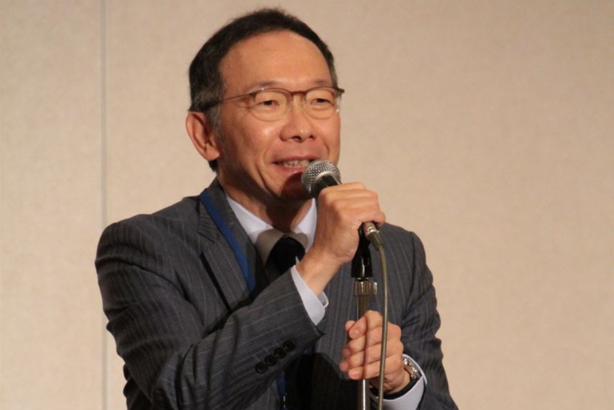
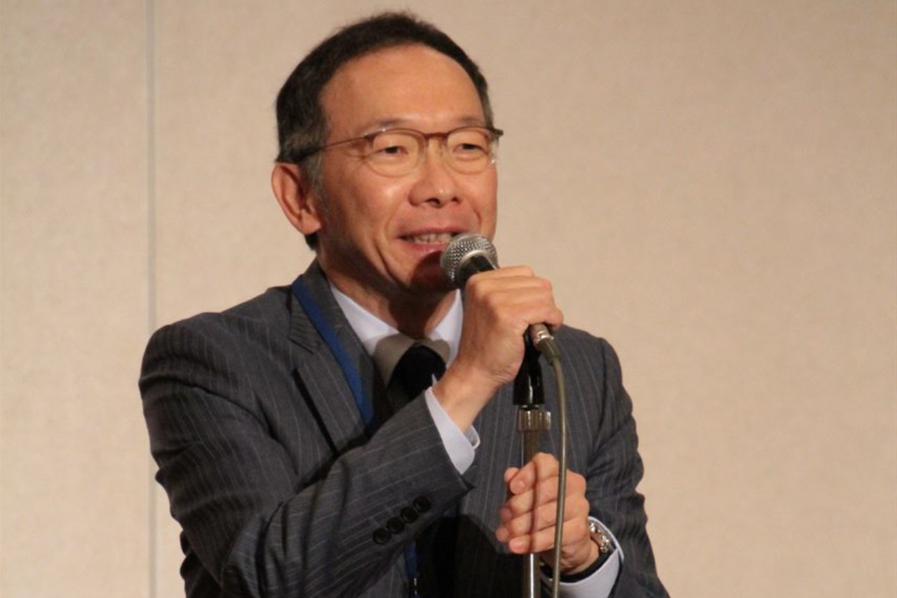

平成２９年６月４日
第５７回札幌突兀会総会・懇親会
６月にしては少々肌寒い日に迎えた第５７会札幌突兀会 総会・懇親会。テーマは「一期一会」、２００名を超える同窓が一堂に会し開催されました。総会の冒頭の挨拶は田村会長。当番長ほか当番期のメンバーは田村邸へ本会の打ち合わせに訪れ、細部の指示を仰ぐなど、本当番期の真剣さを称賛。その日に限って、患者が来院し打ち合わせが何度も中断した、と会場の笑いを誘った。
東京同窓会の高木会長からは、例年は本会まで大通で時間を過ごしているが、今年は寒くて、本校ＯＢの２５期小滝正平氏がプロデュースした映画を鑑賞してきたと挨拶。今年の札幌はやはり例年より寒かったのでしょう。
さて議事に入ります。今年は役員改選期にあたり、まずは役員選考委員会の発足が上程され、９期の上ケ島先輩の委員長ほか選考委員４名が選出され、別室にて新年度役員の選考が行われました。会場では事業報告、会計報告、監査報告と議事は滞りなく行われました。
そして新役員の発表。上ケ島選考委員長より新会長はじめ新役員の発表が行われ、承認されました。新役員を代表して田村新会長が新たな決意表明が行われました。これにて総会は終了。いよいよ懇親会の始まりです。当番期の１年の努力が報われます。
まず、田中当番長よりこの１年、多くの先輩、後輩と出会い、同窓会の意義を再認識させられ、多忙を極めたが人生が豊になったと挨拶。さらに同期との絆を深く感じ、当番期一同、今日は皆さんに笑顔を届けたい一心で準備を進めた、まさに今回のテーマ「一期一会」の思いを熱く語った。これに総会は終了。いよいよ懇親会の始まりです。当番期の１年の努力が披露されます。
続いて来賓挨拶。今年の春、赴任した旭川東高校の岡田校長からは国立大への進学が７クラス制になって以来、最高となり、スポーツにおいても全国大会へ多数の生徒が進出するなど、本校の文武両道の精神を称えました。乾杯の発声は木幡顧問。乾杯で立ち上がった皆を一度着席させ、長いスピーチの予感が。突兀会の会旗の由来を披露し、「シマレガンバレ」の精神は多くの先輩からのメッセージ、今年も無事、受け継がれていることに感動した、と熱く語り乾杯へ。
そして総勢２０７名が集う懇親会へ。今年のアトラクションは当番期が編成した生バンドの演奏。今年の春から猛練習をしていると聞いてはいたものの、どうなることやら心配していました。しかし演奏がはじまると、どうしてどうして大したものです。校歌をあらゆるジャンルにアレンジ。ソウルありロックあり、ジャズ（？）ありと、作詞家の風巻景次郎氏には気の毒に思いはしましたが、新しい解釈に一同、大喝采でした。さらにバックダンサーもお見事で、自宅での涙ぐましい（？）練習の成果に拍手を送りました。
アトラクションも終了し、来年の当番期への引継ぎ。毎年恒例ではありますが、新たな当番長の緊張感が伝わります。万歳三唱を最後に第５７会の総会・懇親会は無事終宴。来年も「シマレガンバレ」の精神は受け継がれ、素晴らしい会になることでしょう。

平成２８年６月５日
第５６回札幌突兀会総会・懇親会
今年も晴天で迎えた第５６回札幌突兀会総会・懇親会。今年は東高35期が当番、テーマは「ＴＡ・ＳＵ・ＫＩ（襷）」、諸先輩から後輩へ、そして過去から未来へつなぐ希望の襷ともいえるでしょうか？
総会は田村会長の挨拶から始まりました。今回の山下当番長が若い世代に札幌突兀会の精神を引き継ぎたい、と表明しており、楽しみにして来ました、と挨拶。続いて旭川同窓会会長の大廣様、東京同窓会会長の高木様より祝辞を頂戴しました。
総会は滞りなく終了し、いよいよ懇親会の幕が上がりました。会場中央のスクリーンに今回のテーマ「襷」を旭川東高から本会場まで、駅伝に見立てて、当番期のメンバーが深川、滝川等に立ち寄り、襷を繋ぐ映像が映し出される。しかし、どう見ても走って来たとは思えない。でも、撮影ご苦労様。
会場に映画「ロッキー」のメインテーマが鳴り響き、山下当番長が襷を身に着け壇上へ駆け上がる。挨拶の冒頭、ボクサー辰吉丈一郎さながら、マイクに頭をぶつけるパフォーマンスに、会場から失笑をかう。山下当番長は海上保安庁勤務で常に洋上におり、陸にはほとんどいられず、洋上から「遠隔操作」で準備を乗り切った、とその苦労を吐露。
続いて、旭川東高校の山根校長の祝辞、懐かしい恩師が紹介され、気持ちは徐々に古き良き在校生時代にタイムスリップしていく。乾杯の挨拶は木幡顧問。顧問も当番長のマイクを使ったパフォーマンスを真似るお茶目な一面を見せ、懇親会は開幕。
余興の前に、今年の５月に衆議院選挙北海道１区の候補に決まった東高４４期の道下大樹道議が壇上にて挨拶。国会に襷を繋げることができるか、同窓の期待が膨らむ。
余興は「～クイズ なるほど・ザ・東高」。テーブル対抗のクイズ合戦。三択問題ではあるものの過去の記憶の扉が開かず、ため息の場面が多くなる。ビデオには現在の東高の在校生が出題者として登場。クラブ活動の合間に当会のため撮影に協力して頂きありがとうございました。協力いただいたお礼に、当番より生徒が希望していた掛け時計を贈呈したとの報告。
会場では今年のテーマにちなんでオレンジ色の「襷タオル」が販売されました。出席した当番期の総勢約７０名のうち男性はこの襷を首に巻き付け、襷を身に着ける諸先輩の姿も多くなる。同窓全員が少しずつ会場で一体化していく。これが突兀会の団結なのかもしれません。
会も終盤、来年の当番期東高３６期に今年の当番から法被が手渡され、引き継ぎが完了。校歌、応援歌を斉唱後、万歳三唱で今年の総会・懇親会もお開き。東高３５期の皆様お疲れ様でした。来年はお客様でご参加ください。さて、１年後、どのような総会・懇親会が催されるのか？楽しみにして待ちましょう。
******* 熊本震災の募金についての御礼と報告 ***************
当日皆様からお預かりした義援金は、合計１４,２９６円となり、先日「熊本県健康福祉政策課 義援金担当係」に寄付させていただきました。ご協力いただきました皆様に感謝申し上げます。
平成２７年６月７日
第５５回札幌突兀会総会・懇親会
晴天で迎えた第５５回札幌突兀会総会・懇親会。今年のテーマは「あの時代（とき）を忘れない」。サザンオールスターズのヒット曲にあったような気が・・・。このテーマが驚きのアトラクションにつながるとは、まだ誰も知らない。
今年の参加者は１８８名、昨年を上回る盛大な総会となりました。開会の辞に続き田村会長の挨拶。会長は冒頭、この１年間に本会の功労者である鉄川元会長、そして幹事長の横内氏の両名が亡くなるなど悲しい年であった、と語りかけました。ただ、その後は当番期の準備を労い、本総会が成功のうちに終わることを祈念し挨拶としました。
来賓の旭川東高等学校同窓会会長 大廣氏、同東京同窓会会長 高木氏より挨拶をいただきました。続いて議事に入ります。業務報告、会計報告が続き、最後に役員改選の結果が報告されました。
そして懇親会。東高３４期当番長の中本氏の挨拶。私はネクタイ姿の当番長を初めてみました。総会の準備本当にお疲れ様です。あと２時間で１年間の苦労が報われます。
改めて来賓旭川東高等学校校長 山根氏の挨拶、恩師の紹介を経て、いよいよ懇親会に。今年の懇親会の目玉は何と「カ・ラ・オ・ケ」。当番期は勝負に出ました。世代が違えば、お気に入りの楽曲も違い、下手をすれば先輩からの叱責を受けるところ。
ただ３４期は乗り切りました。カラオケを歌うのは抽選で選ばれたテーブルのすべてのメンバーが壇上に。卒業期毎にテーブルが設定されており、同年代に合わせた選曲を用意。歌う側は若き思い出の曲、誰でも口ずさめ、会場は手拍子の嵐に。抽選テーブル以外の飛び入りも壇上にあがるなど、同窓の気持ちも「あの時代(とき)」の忘れられない曲で盛り上がりました。
最後の１曲の抽選は、当番期のテーブルに。この日集まった３４期５０名が壇上で大熱唱。会場からもやんやの喝采。ただ、この抽選には疑義もありますが、結果オーライでしょうか。
来年の当番期、３５期との引き継ぎをもって終演。来年も皆様とお会いすることを楽しみにしています。
平成２６年６月８日
第５４回札幌突兀会総会・懇親会
平成２６年６月８日（日）京王プラザホテル札幌にて、恒例の総会・懇親会が盛大に行われました。（開催から２ヶ月を過ぎての報告となります。誠に申し訳ありません。）今年は前日のゴルフを含めて２００人を裕に超える同窓が集い、当番期の努力が報われました。
総会はスムーズな議事にて進み、当初の予定時間よりも早く終了。懇親会が始まるまでのしばしの間、１年振りに顔を合わせる旧友と近況報告など。また、今年は会場に東高の旧校舎のジオラマが展示されました。およそ３メートル四方の精密な縮尺模型に、同窓も足を止め、昔話に花を咲かせていました。当番期の皆様、旭川からの搬送、ご苦労様でした。
プロジェクターから東高の歴史を伝える懐かしの写真・映像が映し出され、懇親会がスタート。映像が終了するとそこに当番期のメンバー１名がトランペットを携え登場、寮歌と校歌の演奏で懇親会の幕が開けられました。続いて、川井当番長の挨拶。本総会・懇親会開催への熱い決意を語ってくれました。
今年の当番期はなかなか手が込んでおりました。歓談後には東校に由来のある秘密ネタを約２０のクイズにまとめた「テーブル対抗クイズ大会」のアトラクション。現地取材の苦労を思わせる写真や映像をふんだんに取り入れたクイズに、参加者は笑顔に包まれました。
懇親会も瞬く間に時は過ぎ、閉会の挨拶へ。挨拶に立たれた堀副会長は会冒頭の当番長の挨拶に賛辞を贈り、参集した同窓の絆を深め、来年の再開を祈念して閉会の辞としました。
本当に当番期の皆様、お疲れ様でした。今はもう８月末。新当番期が来年の開催に向け動き出しています。来年も期待して集いましょう。


平成２５年６月９日
第５３回札幌突兀会総会・懇親会
平成２５年６月９日（日）京王プラザホテル札幌にて、今年も盛大に総会・懇親会が催されました。当番は３２期、熊谷当番長はじめ多くの当番期のみなさんが盛り上げてくれました。テーマの 出逢い。。。古くて新しい～友へ～ のとおり、世代を超えた旧交と新交の場となり、楽しいひとときでした。 会報も充実した内容です。 みなさんまた来年もよろしくお願いいたします。


平成２４年６月１０日
第５２回札幌突兀会総会・懇親会
例年通り、６月の第２日曜日（６/１０）札幌京王プラザにて総会懇親会が開催されました。
テーマは「憶～校舎は北の大地に」。昨年の５０周年記念大会の次年度にもかかわらず２００名以上の出席者を迎えました。当番期は旭川３１期の皆さんのおかげです。
全国大会出場の硬式野球の応援団の特別公演などがあり、素晴らしい余興に会場は自然に包まれました。同窓憶う故郷憶うに記されることができた楽しい会でした。来年もまたよろしくお願いいたします。
平成２３年６月５日
第５１回札幌突兀会総会・懇親会
２０１１年 第５１回総会・懇親会 ６/５（日） 京王プラザ札幌 ２Ｆエミネンスホール 参加２０２名
東日本大震災があり自粛も検討されましたが、こういうときこそ一致団結が大事と、開催テーマ[集え突兀人！やるべきことは多い] のテーマのもと開催されました。
第５０回の記念大会の次の年ということで、いつもの１８０名前後の参加と思われましたが、２００名を越える参加となり大いに盛り上がりました。
旭川から新校長の森徳男先生・糸田先生・松野同窓会長や東京から高木宏明東京同窓会新会長などを迎え、旧校舎の模型展示や、母校旭川映像上映・当番長と当番期（女性含む）による新鮮なエール・母娘２世代にわたる参加・ 陸上自衛隊小沼１等陸佐（東高３０期）の災害派遣報告など充実した楽しい会になりました。
会報には田村会長の言葉で[当番となるとどこからともなく同窓生が多数集まる姿は夢のようであり先輩として活躍を願います。]とありました。東高３０期の当番期のみなさんありがとうございました。みなさん来年もまた是非楽しみにして下さい。
平成２２年６月６日
第５０回札幌突兀会総会・懇親会
さる６月６日（日）、札幌突兀会５０周年記念総会・懇親会が２３１名の参加をえて札幌京王プラザにて開催されました。
元日本ハム球団の土田光男さんの講演、甲斐熊五郎さんのシャンソン熱唱のほか、田村会長のご尽力で高橋はるみ北海道知事と中田博幸札幌副市長もお見えになり、ＳＴＶ明石英一郎さんの母校熱血直撃取材ビデオなど、５０周年にふさわしい心に残る盛大な大会となりました。
当番期（東高２９期）のみなさま本当にありがとうございました。来年もまた集まりましょう。新たな方々の参加も是非お待ちしています。よろしくお願いします。
平成２１年６月７日
第４９回札幌突こつ会総会・懇親会
と き：平成２１年６月７日（日） 午後１時３０分から 総会、午後２時３０分から 懇親会
ところ：京王プラザホテル札幌 Ｂ１Ｆ「プラザホール」
札幌市中央区北5条西7丁目 ＴＥＬ：011-271－0111
会費：７，０００円（夫婦割引お二人10,000円、学生割引お一人2,000円）
当番長：畠山 隆史（東高28期）
総会式次第
- １．開会：司会 宮崎 鉄也（東高28期）、中澤 福美（東高28期）
- ２．黙祷
- ３．会長挨拶：札幌突こつ会会長 木幡 敏也（東高9期）
- ４．来賓紹介：
- 旭川東高等学校校長 小島 修二 様
- 旭川東高等学校同窓会会長 松野 和彦 様（東高16期）
- 旭川東高等学校同窓会副会長 荒井 保明 様（東高29期）
- 旭川東高等学校同窓会専務理事 糸田 敏光 様（東高9期）
- 旭川東高等学校同窓会事務局 小野沢融子 様（東高26期）
- 旭川東高等学校東京同窓会会長 安井 規雄 様（東高17期）
- ５．来賓挨拶：
- 旭川東高等学校東京高等学校同窓会会長 松野 和彦 様（東高16期）
- 旭川東高等学校東京同窓会会長 安井 規雄 様（東高17期）
- ６．議長選出：総会議長 平泉 剛（東高12期）
- ７．役員選考
- ８．業務報告：札幌突こつ会幹事長 田村 康史（東高18期）
- ９．会計報告：札幌突こつ会会計 上杉 光司（東高19期）
- １０．監査報告：札幌突こつ会監事 上ヶ嶋桂一（東高9期）
- １１．議長退任
- １２．閉会
懇親会プログラム
- １．開会（司会）：宮崎 鉄也、中澤 福美
- ２．当番長挨拶：畠山 隆史（東高28期）
- ３．会長挨拶ならびに新役員紹介：札幌突こつ会会長 木幡 敏也（東高9期）
- ４．新役員代表挨拶
- ５．来賓挨拶：旭川東高等学校校長 小島 修二 様
- ６．恩師紹介：
- 青木 主計 様
- 糸田 敏光 様
- 梅村 茂 様
- 大石 充也 様
- 小野沢融子様
- 椎名 裕之 様
- 杉森 邦雄 様
- 武田 哲 様
- 豊田 実大 様
- 中井君三郎様
- 藤井 茂男 様（五十音順）
- ７．乾杯：石垣 博美（旭中33期）
- （歓 談）
- ８．祝電披露
- ９．ゴルフコンペ結果報告
- １０．最多人数出席期、最年長・最年少出席者表彰
- １１．当番期引継：２８期 当番長 畠山 隆史、２９期 〃 川瀬 雅之
- １２．安田記念競馬中継
- １３．東高校歌・旭中校歌斉唱
- １４．エール・応援歌合唱
- １５．新幹事長挨拶：平尾 稔幸（東高21期）
- １６．万歳三唱
- １７．閉会
ミニ講演会「理系×文系＝生活美学」
講師：荒井 三津子（東高22期）
北海道文教大学教授、
札幌国際大学、函館短期大学非常勤講師
お刺身の盛り付けと日本庭園、数列と美、幸せの曲線ほか


恩師画像
平成２０年６月８日
第４８回札幌突こつ会総会・懇親会
と き：平成２０年６月８日（日） 午後１時３０分から 総会、午後２時から４時３０分 懇親会
ところ：京王プラザホテル札幌 Ｂ１Ｆ「プラザホール」
札幌市中央区北5条西7丁目 ＴＥＬ：011-271－0111
会費：７，０００円（夫婦割引、学生割引）
当番長：横澤 均（旭川東27期）
総会式次第
- １．開会：司会 加藤 匡人（東高27期）
- ２．黙祷
- ３．会長挨拶：札幌突こつ会会長 木幡 敏也（東高9期）
- ４．来賓紹介：
- 旭川東高等学校校長 富樫 一憲 様（東高17期）
- 旭川東高等学校同窓会会長 松野 和彦 様（東高16期）
- 旭川東高等学校同窓会専務理事 糸田 敏光 様（東高9期）
- 東京同窓会会長 安井 規雄 様（旭高17期）
- 東京同窓会相談役 木幡 功 様（旭中43期・旭高2期）
- ５．来賓挨拶：
- 旭川東高等学校同窓会会長 松野 和彦 様（東高16期）
- 東京同窓会会長 安井 規雄 様（旭高17期）
- ６．議長選出：桃井 勲（東高12期）
- ７．業務報告：札幌突こつ会幹事長 田村 康史（東高18期）
- ８．会計報告：札幌突こつ会会計 上杉 光司（東高19期）
- ９．監査報告：札幌突こつ会監事 上ヶ嶋桂一（東高9期）
- １０．議長退任
- １１．閉会
懇親会プログラム
- １．開会（司会）：黒井 克行、加納真由美（東高27期）
- ２．当番長挨拶：横澤 均（東高27期）
- ３．会長挨拶：札幌突こつ会会長 木幡 敏也（東高9期）
- ４．恩師紹介：
- 糸田 敏光 様
- 岩淵 重光 様
- 梅村 茂 様
- 清末 定子 様
- 中川 文夫 様
- 小野沢融子様
- 三宅 仁 様（五十音順）
- ５．来賓挨拶：旭川東高等学校校長 富樫 一憲 様（東高17期）
- ６．祝電披露
- ７．祝杯：旭川副市長 中屋 利夫様（旭高15期）
- （歓 談）
- ８．余興：
- 剣舞「川中島」 横幕 義信様（東高16期）
- 昭和（DVD）
- 旭川同窓会ＰＲ
- 昭和クイズ大会
- ９．最多人員、最年長、最年少出席期表彰
- １０．当番期引継：第48回総会･懇談会当番長 横澤 均（東高27期）、第49回総会･懇談会当番長 畠山 隆史（東高28期）
- １１．応援団エール
- １２．校歌・応援歌斉唱
- １３．幹事長挨拶：札幌突こつ会幹事長 田村 康史（東高18期）
- １４．万歳三唱：斉木 登 （旭中35期）
- １５．閉会

 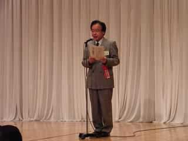
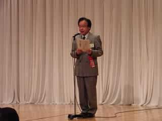


 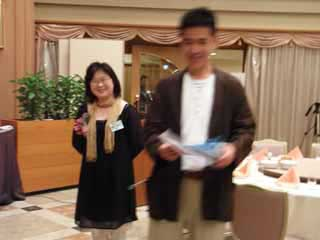
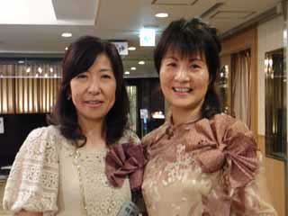
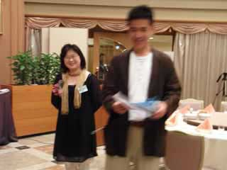
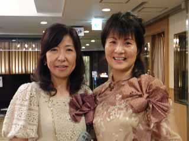
平成１９年６月１０日
第４７回札幌突こつ会総会・懇親会
と き：平成１９年６月１０日（日） 午後１時３０分 総会、午後２時 懇親会
ところ：京王プラザホテル札幌
札幌市中央区北5条西7丁目 ＴＥＬ：011-271－0111
会費：５，０００円
当番：２６期（当番長 山際 裕信）
総会式次第
- １．開会：司会 小林 一裕（東高26期）
- ２．黙祷
- ３．会長挨拶：札幌突こつ会会長 木幡 敏也（東高9期）
- ４．来賓紹介：
- 旭川東高等学校校長 富樫 一憲 様（東高17期）
- 旭川東高等学校教論（同窓会事務局） 大西 清勝 様（東高26期）
- 旭川東高等学校教論（同窓会事務局） 小野沢融子 様（東高26期）
- 旭川東高等学校同窓会専務理事 糸田 敏光 様（東高9期）
- 旭川東高等学校同窓会副会長 大廣 泰久 様（東高21期）
- 旭川東高等学校同窓会副会長 加藤 照代 様（東高33期）
- 東京同窓会相談役 木幡 功 様（旭中43期・旭高2期）
- ５．来賓挨拶：旭川東高等学校同窓会副会長 大廣 泰久 様（東高21期）
- ６．議長選出：工藤 直昭（東高7期）
- ７．役員改選
- ８．業務報告：札幌突こつ会幹事長 田村 康史（東高18期）
- ９．会計報告：札幌突こつ会会計 上杉 光司（東高19期）
- １０．監査報告：札幌突こつ会監事 山脇 真弓（東高18期）
- １１．議長退任
- １２．閉会
新役員
- 顧問：西村 一男※（旭中40期・旭中41期）
- 会長：木幡 敏也（東高9期）
- 副会長：塩谷日出子※（東高11期）、横幕 義信※（東高16期）、田村 康史（東高18期）、堀 裕明（東高19期）
- 幹事長：田村 康史（兼任） 以下省略
※新任
懇親会プログラム
- １．開会（司会）：伊吹 均士（東高26期）
- ２．当番長挨拶：山際 裕信（東高26期）
- ３．会長挨拶並びに新役員紹介：木幡 敏也（東高9期）
- ４．恩師紹介：
- 今井 清則様
- 梅村 茂様
- 金谷 武好様
- 富樫 功様
- 福井 誠一様
- 藤井 茂男様
- 三上 信迪様
- 箕島 和央様
- 三宅 仁様
- 糸田 敏光様
- ５．来賓挨拶：旭川東高等学校校長 富樫 一憲 様（東高17期）
- ６．祝電披露
- ７．祝杯：東京同窓会相談役 木幡 功様（旭中43期・旭高2期）
- （歓 談）
- ８．余興：
- 謡曲 観世流「鞍馬天狗」 宮崎 勇様（東高11期）
- 旭川東高の近況（DVD） 大西 清勝様（東高26期）
- 旭川市の近況（DVD）
- ９．テーブルスピーチ
- １０．ゲーム大会
- １１．最多人員、最年長、最年少出席期表彰
- １２．当番期引継：東高26期 当番長 山際 裕信、東高27期 当番長 横沢 均
- １３．応援団エール：旭川東高元応援団長 本間 紀佳様（東高26期）
- １４．校歌・応援歌斉唱
- １５．幹事長挨拶：札幌突こつ会幹事長 田村 康史（東高18期）
- １６．万歳三唱：斉木 登 （旭中35期）
- １７．閉会
平成１８年６月９日
第４６回札幌突こつ会総会・懇親会
と き：平成１８年６月９日（金） 午後６時３０分 総会、午後７時 懇親会
ところ：ＫＫＲホテル札幌 「丹頂」
札幌市中央区北４条西５丁目 ＴＥＬ：011-231－6711
会費：８，０００円
当番：２５期（当番長 岸上 裕幸）
総会式次第
- １．開会：司会 中川 均（東高25期）
- ２．黙祷
- ３．会長挨拶：札幌突こつ会会長 木幡 敏也（東高9期）
- ４．来賓紹介：
- 旭川東高等学校校長 富樫 一憲 様（東高17期）
- 旭川東高等学校同窓会会長 松野 和彦 様（東高16期）
- 旭川東高等学校同窓会専務理事 糸田 敏光 様（東高9期）
- 旭川東高等学校同窓会事務局 水野 雅文 様（東高31期）
- 東京同窓会相談役 木幡 功 様（旭中43期・旭高2期）
- ５．来賓挨拶：旭川東高等学校同窓会会長 松野 和彦 様（東高16期）
- ６．議長選出
- ７．業務報告：札幌突こつ会幹事長 田村 康史（東高18期）
- ８．会計報告：札幌突こつ会会計 上杉 光司（東高19期）
- ９．監査報告：札幌突こつ会監事 佐々木 徳明（東高9期）
- １０．議長退任
- １１．閉会：司会
懇親会プログラム
- １．開会の辞：司会 中川 均（東高25期）
- ２．当番長挨拶：岸上 裕幸（東高25期）
- ３．会長挨拶：木幡 敏也（東高9期）
- ４．恩師紹介：
- 伊良原国男 様
- 梅村 茂 様
- 武田 哲 様
- 坪 敏雄 様
- 藤井 茂男 様（五十音順）
- ５．来賓挨拶：
- 旭川東高等学校校長 富樫 一憲 様（東高17期）
- 東京同窓会相談役 木幡 功 様（旭中43期・旭高2期）
- ６．祝電披露
- ７．祝杯
- ８．余興：日本舞踊「名槍日本号」横幕義信（東高16期）
- ９．ゴルフコンぺ結果報告：佐藤 公春（東高25期）
- １０．最多人員出席期表彰
- １１．最年少出席期表彰
- １２．ゲーム
- １３．当番期引継：東高２５期 当番長 岸上 裕幸、東高２６期 当番長 山際 裕信
- １４．校歌・応援歌斉唱
- １５．幹事長挨拶：札幌突こつ会幹事長 田村 康史（東高18期）
- １６．万歳三唱
- １７．閉会の辞


 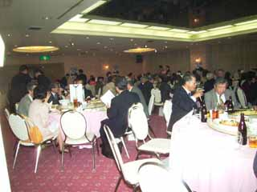
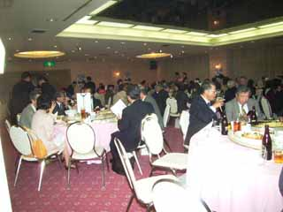

平成１７年６月１１日
第４５回札幌突こつ会総会・懇親会
と き：平成１７年６月１１日（土） 午後６時３０分 総会、午後７時 懇親会
ところ：ＫＫＲホテル札幌 「丹頂」
札幌市中央区北４条西５丁目 ＴＥＬ：011-231－6711
会費：８，０００円
当番：２４期（当番長 中川 均）
総会式次第
- １．開会：司会 中川 均（東高24期）
- ２．黙祷
- ３．会長挨拶：札幌突こつ会会長 木幡 敏也（東高9期）
- ４．来賓紹介：
- 旭川東高等学校校長 富樫 一憲 様（東高17期）
- 旭川東高等学校同窓会会長 松野 和彦 様（東高16期）
- 旭川東高等学校同窓会専務理事 糸田 敏光 様（東高9期）
- 旭川東高等学校同窓会事務局 水野 雅文 様（東高31期）
- 東京同窓会相談役 木幡 功 様（旭中43期・旭高2期）
- ５．来賓挨拶：旭川東高等学校同窓会会長 松野 和彦 様（東高16期）
- ６．議長選出
- ７．業務報告：札幌突こつ会幹事長 田村 康史（東高18期）
- ８．会計報告：札幌突こつ会会計 上杉 光司（東高19期）
- ９．監査報告：札幌突こつ会監事 佐々木 徳明（東高9期）
- １０．議長退任
- １１．閉会：司会
懇親会プログラム
- １．開会の辞：司会 中川 均（東高24期）
- ２．当番長挨拶：中川 均（東高24期）
- ３．会長挨拶：木幡 敏也（東高9期）
- ４．恩師紹介：
- 伊良原国男 様
- 梅村 茂 様
- 武田 哲 様
- 坪 敏雄 様
- 藤井 茂男 様（五十音順）
- ５．来賓挨拶：
- 旭川東高等学校校長 富樫 一憲 様（東高17期）
- 東京同窓会相談役 木幡 功 様（旭中43期・旭高2期）
- ６．祝電披露
- ７．祝杯
- ８．余興：能謡曲 観世流鶴亀 宮崎 勇（東高11期）
- ９．ゴルフコンぺ結果報告：佐藤 公春（東高24期）
- １０．最多人員出席期表彰
- １１．最年少出席期表彰
- １２．ゲーム
- １３．当番期引継：東高２４期 当番長 中川 均、東高２５期 当番長 岸上 裕幸
- １４．校歌・応援歌斉唱
- １５．幹事長挨拶：札幌突こつ会幹事長 田村 康史（東高18期）
- １６．万歳三唱
- １７．閉会の辞


 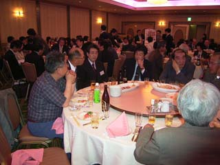
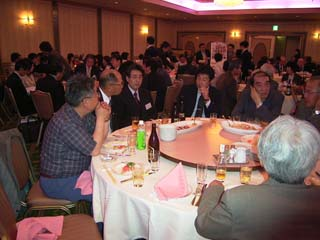

 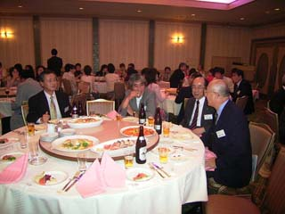
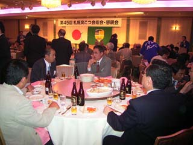
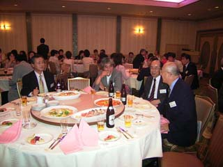
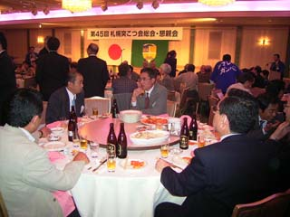

平成１６年６月１０日
第４４回札幌突こつ会総会・懇親会
平成16年６月１０日（木）に京王プラザホテル札幌にて、第４４回札幌突こつ会総会・懇親会が開催されました。午後６時より総会、６時３０分より懇親会が行われ、会費は８０００円、１７０名が出席しました。当番期は２３期（当番長 横内隆志）でした。
総会式次第
- １．開会：司会 真弓 明彦（東高23期）
- ２．黙祷
- ３．会長挨拶：札幌突こつ会会長 木幡 敏也（東高9期）
- ４．来賓紹介：旭川東高等学校校長 濱本 武司 様、旭川東高等学校同窓会会長 仲山 昭義 様（東高10期）、旭川東高等学校同窓会事務局長 水野 雅文 様（東高31期）
- ５．来賓挨拶：旭川東高等学校同窓会会長 仲山 昭義 様（東高10期）
- ６．議長選出：府録 弘幸 様（東高1期）
- ７．業務報告：幹事長 田村 康史（東高18期）
- ８．会計報告：会計 酒井 正（東高18期）
- ９．監査報告：監事 佐々木徳明（東高9期）
- １０．議長退任
- １１．閉会
懇親会プログラム
- １．開会：司会 真弓 明彦（東高23期）
- ２．当番長挨拶：横内 隆志（東高23期）
- ３．会長挨拶：木幡 敏也（東高9期）
- ４．来賓挨拶：旭川東高等学校校長 濱本 武司 様
- ５．恩師紹介：石原 秀哉 様、伊良原 国男 様、梅村 茂 様、武田 哲 様、三宅 仁 様、渡利 淳 様
- ６．祝電披露
- ７．乾杯
- ８．ゴルフコンべ結果報告
- ９．最多人員出席期表彰
- １０．最年少出席期表彰
- １１．ゲーム
- １２．当番期引継：23期当番長 横内 隆志、24期当番長 藤井 一郎
- １３．校歌斉唱（旭中、旭東高校歌）
- １４．逍遥歌吟唱
- １５．エール
- １６．応援歌合唱
- １７．万歳三唱
- １８．閉会の辞